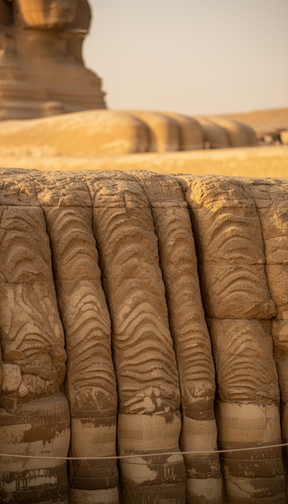

The Great Sphinx of Giza is carved from limestone and covered in vertical fissures that geologists identify as rainfall weathering. It sits in a desert that has not seen sustained heavy rain since before 5000 BCE. Egyptology insists it was built around 2500 BCE.
Almost nobody knows this fight happened on a public stage. In 1992, at a Geological Society of America convention, the geologists sided with the rocks. The Egyptologists sided with the textbook. The rocks did not change.

The Boston University Geologist Who Read the Walls
In 1990, John Anthony West brought geologist Robert Schoch of Boston University to Giza to examine the Sphinx enclosure. Schoch was not looking for Atlantis. He was looking at limestone.
Schoch documented deep vertical fissures running down the enclosure walls. He documented an undulating, rolling profile on the horizontal surfaces. He documented weathering patterns that do not match wind abrasion or sand scouring.
The patterns matched one process. Water. Specifically, thousands of years of precipitation running down vertical stone faces and pooling at their base. Schoch presented his conclusions in 1991 and formally published them in the years following.
The Sahara Timeline That Makes This Impossible
Paleoclimatology on North Africa is settled science. The African Humid Period, sometimes called the Neolithic Subpluvial, ran from roughly 9000 BCE to about 5000 BCE. During that window the Sahara was green. Lakes. Grasslands. Cattle herders. Rock art at Tassili n'Ajjer in Algeria shows swimmers and hippos.
After roughly 3500 BCE, the region locked into the hyperarid desert it is today. Occasional flash rains happen. Sustained precipitation weathering carved into bedrock does not.
Egyptology dates the Sphinx to the reign of Khafre, Fourth Dynasty, around 2500 BCE. That places construction roughly 2,500 years after the last window when the climate could have produced the weathering Schoch documented.
The 1992 Geological Society of America Debate
Schoch presented at the GSA annual meeting in San Diego in October 1992. The session was titled as a debate. On one side, Schoch and the geological data. On the other, Egyptologist Mark Lehner, who has spent his career mapping the Giza plateau and directs the Ancient Egypt Research Associates.
Attending geologists, according to reporting by Boston University and coverage in the New York Times on October 23, 1992, largely agreed the weathering looked like precipitation damage. They did not vote on dates. They agreed on the process.
Lehner and Egyptologist Zahi Hawass, then director of the Giza plateau, refused to entertain redating. Their objection was archaeological, not geological. No known civilization existed early enough to have carved a monument that size.
The rocks do not care what civilization we have named. The rocks record what happened to them.
The Objections That Do Not Answer the Geology
Critics offer three counter-arguments. Each avoids the enclosure walls.
First, that Nile flooding caused the erosion. The Sphinx sits roughly 25 meters above the Nile floodplain. Floods do not climb hills.
Second, that limestone from the enclosure was quarried for the Khafre Valley Temple, proving the enclosure was cut in Khafre's time. Schoch's reply is that the enclosure could have been enlarged or recut in 2500 BCE around a monument that already existed. Recutting a pit is not the same as carving the statue inside it.
Third, that occasional heavy rains in the Dynastic period could account for the damage. Geologist Colin Reader, who does not accept Schoch's full early date, examined this specifically and concluded the weathering exceeds what Dynastic-era rainfall could produce. Reader still pushed the Sphinx back at least several centuries before Khafre.
What the Museum Record Actually Contains
The famous Dream Stele that sits between the Sphinx's paws was erected by Thutmose IV around 1400 BCE. It records that the Sphinx was already ancient, buried to the neck in sand, when Thutmose cleared it. That stele is still there, in situ at Giza, cataloged and photographed.
The Inventory Stele, found by Auguste Mariette in 1858 and now held in the Egyptian Museum in Cairo, states that Khufu, Khafre's father, repaired the Sphinx. If Khafre built it, his father could not have repaired it. Mainstream Egyptology dismisses the Inventory Stele as a later fabrication. The stone still exists in the museum's collection.
The Sphinx Temple directly in front of the monument uses core blocks weighing up to 100 tons, quarried from the enclosure itself. Those blocks share the same rainfall weathering profile Schoch identified on the enclosure walls. If the temple is Khafre's, and the blocks weathered before being set in the temple, the enclosure was cut before Khafre.
Why the Fight Never Ended
Schoch never claimed Atlantis. He estimated the core body of the Sphinx was carved somewhere between 7000 and 5000 BCE, during the tail end of the wet period. He kept the claim inside the geological data.
West went further, invoking a lost civilization. That framing gave Egyptology a rhetorical exit. Attack West, ignore Schoch. The Wikipedia entry on the water erosion hypothesis calls it a fringe claim inspired by Atlantis. It buries the fact that the geology was presented at the Geological Society of America and that attending geologists broadly agreed with the weathering interpretation.
The label "fringe" does the work that the counter-evidence cannot. If the geology were wrong, the geology would be the argument. Instead the argument is about who is allowed to speak.
The Sphinx is either younger than the rain that carved it, which is physically impossible, or older than the civilization we credit with carving it, which is historically forbidden. Pick one. The stone already picked.
The mainstream position is not that Schoch is wrong about the weathering. The mainstream position is that no acceptable builder exists. That is not an argument from evidence. That is an argument from the absence of a name to file the evidence under.
So who was carving 100-ton limestone blocks at Giza before the Sahara dried out. And why does every answer to that question end with someone losing their tenure.
Before you go
7 books the Vatican doesn't want you reading. Free PDF — the texts they cut, with sources. Joined by 140+ Inner Circle members.
No spam. Unsubscribe anytime.
Go deeper
The Hidden Canon, Vol. I — Enoch. Jubilees. Thomas. Mary. Judas. 90 pages, 14 chapters, every receipt cited. The books your Bible quietly removed.
Read the Canon →Books that informed this investigation
As an Amazon Associate, Hidden Epoch earns from qualifying purchases. Cost to you: nothing.
Research safely
The VPN we use to research without being tracked. First 3 months free.
Get NordVPN →